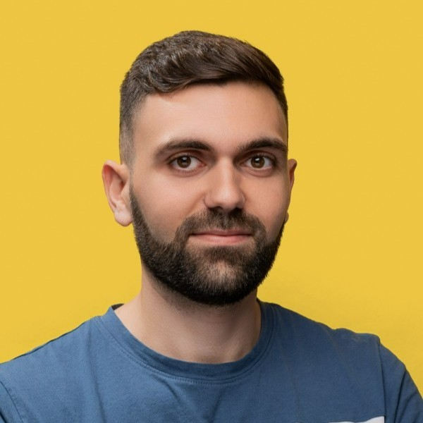

Joined DataSnipper shortly before its Series A funding round during a period of rapid growth. As a founding engineer within the Financial Statement Suite (FSS) team, I helped establish both the product's technical foundations and its supporting cloud infrastructure, enabling the team to scale from its inception to 10 engineers. Alongside the company's growth into a profitable unicorn, I took ownership of delivering backend services, platform capabilities, and operational infrastructure supporting the product's continued expansion.
Joined a newly established architecture and engineering team responsible for designing and scaling backend systems supporting multiple business-critical platforms.